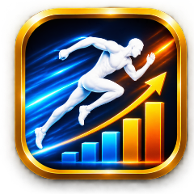
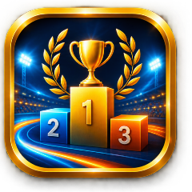

FOR AKTIVE FRIIDRETTSUTØVERE
Hvor bør du konkurrere for å forbedre rankingscoren?
Skriv inn faktisk prestasjon, stevnekategori, plassering og vind – og se om resultatet forbedrer World Athletics-rankingen din.
World Athletics-logikkResult Score + Placing Score= Performance Score
Gjennomsnittet av tellende Performance Scores
=Ranking Score

BEREGN RANKING SCORERegn ut Performance Score og ny Ranking Score fra prestasjonen din.
ANBEFALTE STEVNERStevner med høy kategori og lavt historisk nivå - valgt for din ranking.FINN STEVNERSøk opp stevner filtrert på øvelse, kategori, kjønn og sted.Finn dagens ranking
UTØVERPROFIL
Finn utøver
Ingen lagret profil ennå.
Ingen WA-profil valgt.
VELG ØVELSE FOR RANKING
Velg kjønn og øvelse
Ny prestasjon
Skriv resultatet slik det normalt oppgis i øvelsen.
Result Score–
Placing Score–
Performance Score–
Resultatet sammenlignes med ditt nåværende rankinggrunnlag.
Dine nåværende Performance Scores
KVALIFISERING
Dine anbefalte stevner
STEVNEFINNER
Laster …